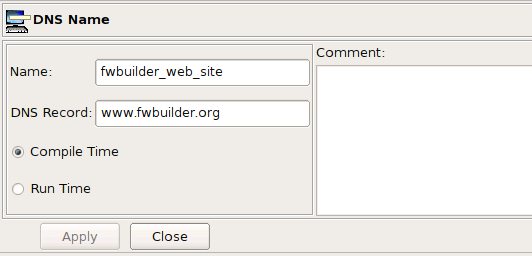
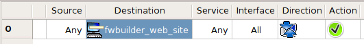

Firewall Builder project page: http://www.fwbuilder.org
| Author: vadim@fwbuilder.org Firewall Builder project page: http://www.fwbuilder.org |
This article continues the series of articles on Fireall Builder, a graphical firewall configuration and management tool that supports many Open Source firewall platforms as well as Cisco IOS access lists and Cisco ASA (PIX). Firewall Builder was introduced on this site earlier with articles Getting Started With Firewall Builder, Using Built-In Revision Control In Firewall Builder, Using Built-in Policy Installer in Firewall Builder, Using Firewall Object In Firewall Builder.
This article demonstrates how you can build firewall rules matching DNS A records.
More information on Firewall Builder, pre-built binary packages and source code, documentation can be found on the project web site at http://www.fwbuilder.org/. Numerous examples of iptables, pf and other rules are available in Firewall Builder Users Guide. Follow Firewall Builder Project Blog for announcements and articles on all aspects of using Firewall Builder.
A DNS Name object represents a DNS "A" or "AAAA" record. The object resolves into IP address at compile or run time. The address (IPv4 or IPv6) the object resolves to depends the address family or families of the ruleset it is used in. That is, if the object is used in a rule that is part of IPv4 rule set, the compiler will try to resolve the object using DNS query for the "A" record, but if the object is used in a rule that is part of an IPv6 rule set, the compiler will run a "AAAA" query. If the rule set where the object is used is a mixed type (IPv4+IPv6), the compiler will resolve the same object twice using different queries.
The DNS Name object dialog looks like this:

The DNS Record parameter is the name of the A or AAAA record we want to resolve. In this example it is the host name of the Firewall Builder project web site "www.fwbuilder.org". Note that IPv6 web server for the project is accessible as "ipv6.fwbuilder.org" so we are going to need second DNS Name object for IPv6 examples. Compile Time and Run Time options have the same meaning as those in the Address Table object, that is, compile time DNS Name object is converted to the IP address by the policy compiler, while run time DNS Name object is not. In the latter case, the compiler puts DNS record name into the generated script or configuration file and leaves it up to the firewall to resolve it when the script is activated.
Both compile time and run DNS Name objects are supported on all target firewall platforms.
Let's look at how the simple rule shown in the following screenshot compiles for iptables and PF, both for compile time and run time DNS Name object.
# Rule 0 (global) # $IPTABLES -A FORWARD -d 70.85.175.170 -m state --state NEW -j ACCEPT
In this trivial case, the compiler simply resolved "www.fwbuilder.org" to an IP address and used it in the iptables command. However, if the policy rule was in a ruleset configured as an IPv6-only rule set, the rule would not produce any iptables command at all because there is no AAAA DNS record with name "www.fwbuilder.org". If the rule set was both IPv4+IPv6, then the rule would generate iptables command only in the IPv4 part. The opposite is also true, the DNS Name object with record "ipv6.fwbuilder.org" will only produce iptables commands when used in IPv6 rule set because there is only AAAA record with this name.
# Rule 0 (global) # pass in quick inet from any to 70.85.175.170 keep state
The same is true in the case of PF: the compiler simply resolved the name "www.fwbuilder.org" and put the address in the generated pf.conf file. Since this name does not resolve into any IPv6 address, IPv6 PF policy would not have any line for this rule. DNS record "ipv6.fwbuilder.org" resolves only into an IPv6 address, and therefore DNS Name object with this record would only produce pf.conf configuration for IPv6 and not for IPv4.
# Rule 0 (global) # $IPTABLES -A FORWARD -d www.fwbuilder.org -m state --state NEW -j ACCEPT
Here the compiler used the line entered in the DNS record parameter literally, leaving it up to iptables on the firewall machine to resolve this name into an IP address. Using a run time DNS Name object in IPv6 policy generates the following iptables command:
# Rule 0 (global) # $IP6TABLES -A FORWARD -d ipv6.fwbuilder.org -m state --state NEW -j ACCEPT
$IP6TABLES is the shell variable defined at the beginning of the generated script, the value of this variable is the full path to the ip6tables command line utility. ip6tables will try to resolve given name to an IPv6 address since it processes IPv6 iptables policy.
# Rule 0 (global) # pass in quick inet from any to www.fwbuilder.org keep state pass out quick inet from any to www.fwbuilder.org keep state
Run time DNS Name object translates into PF configuration lines that also use the name of the DNS record and leave it up to PF to actually resolve it to an IP address when the configuration is loaded.
References: